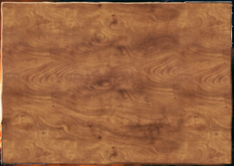
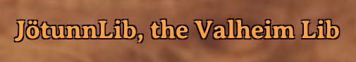

GUI
The GUI manager provides useful methods to create buttons, text element and more.
Wood panels

Woodpanels, nicely usable as containers for other gui elements.
Example:
var panel = GUIManager.Instance.CreateWoodpanel(GUIManager.PixelFix.transform, new Vector2(0.5f, 0.5f), new Vector2(0.5f, 0.5f), new Vector2(0f, 0f), 400f, 300f);
Buttons
To create buttons, provide text, the parent's transform, min and max anchors, the position and it's size (width and height).
Example:
var button = GUIManager.Instance.CreateButton("A Test Button", testPanel.transform, new Vector2(0.5f, 0.5f), new Vector2(0.5f, 0.5f), new Vector2(0, 0), 250, 100);
Text elements

Example:
var text = GUIManager.Instance.CreateText("JötunnLib, the Valheim Lib", GUIManager.PixelFix.transform,new Vector2(0.5f, 0.5f), new Vector2(0.5f, 0.5f),
new Vector2(0f, 0f), GUIManager.Instance.AveriaSerifBold, 18, GUIManager.Instance.ValheimOrange, true, Color.black, 400f, 30f, false);
Checkboxes

Example:
var checkbox = GUIManager.Instance.CreateToggle(GUIManager.PixelFix.transform, new Vector2(0f, 0f), f, 40f);
Getting sprites
Gets sprites from the textureatlas by name. You find a list of the sprite names here.
var sprite = GUIManager.Instance.GetSprite("text_field");
Instance properties
The GUI manager also comes with some useful instance properties.
- Font AveriaSerif
- Font AveriaSerifBold (the default Valheim font)
- Color ValheimOrange